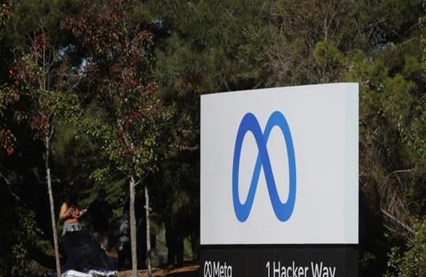

Meta cria inteligência artificial capaz de traduzir 200 idiomas no Facebook, no Instagram e na Wikipédia
06/07/2022 10h00 - Atualizado 31/06/2022 10h00
A Meta, controladora do Facebook e do Instagram, anunciou nesta quarta-feira (6) a criação de um novo modelo de inteligência artificial que pode traduzir textos com mais precisão em mais de 200 idiomas.
O No Language Left Behind (NLLB-200, ou "Nenhum idioma deixado para trás", em tradução livre) será usado para melhorar traduções no feed do Facebook e do Instagram. Ele também servirá para facilitar a interação entre usuários falantes de diferentes idiomas no chamado metaverso.
A expectativa é de que ferramenta de tradução também ajude a detectar mais facilmente conteúdo prejudicial em diversos idiomas nas plataformas da Meta.
O modelo de inteligência artificial já está sendo usado por editores da Wikipédia para traduzir artigos para mais de 20 idiomas que, até então, tinham pouco conteúdo na plataforma.
Segundo a Meta, centenas de idiomas não são atendidos atualmente por ferramentas de tradução de alta qualidade.
"Hoje, menos de 25 idiomas africanos são compatíveis com as ferramentas de tradução mais usadas, sendo que muitas delas são de baixa qualidade. Já o NLLB-200 é compatível com 55 idiomas africanos com resultados de alta qualidade", disse a empresa.
Entre as línguas suportadas pelo NLLB-200, estão Ayacucho Quechua, Aymara Central, Guarani, Crioulo Haitiano, Papiamento, falados por mais de 20 milhões de pessoas em 10 países da América Latina, de acordo com a companhia.
Como funciona?
Os sistemas de tradução automática são treinados a partir de conjuntos de dados que permitem fazer uma correspondência entre frases em diferentes idiomas.
Quando não há conjuntos com grande volume de frases paralelas entre dois idiomas, pesquisadores podem coletar conteúdo por meio da mineração de dados na internet. Mas essa alternativa nem sempre oferece traduções de qualidade, já que os sites podem ter erros ortográficos.
Para conseguir um conjunto de dados com mais qualidade, a Meta aprimorou o LASER, seu kit de processamento de linguagem. Em resumo, a empresa usou um processo de treinamento multilíngue que agrupa idiomas parecidos.
Com isso, um idioma que tem mais recursos de tradução pode ajudar a identificar frases em idiomas semelhantes que têm poucos recursos de tradução.
Segundo a Meta, esse método faz com que idiomas parecidos possam compartilhar dados entre si durante o treinamento.
"Além disso, o modelo único multilíngue permite que os pesquisadores façam repetições, expansões e testes com muito mais facilidade, em comparação com centenas ou até milhares de modelos bilíngues diferentes", afirmou a empresa.
O NLLB-200 está disponível em código aberto para pesquisadores. A companhia também liberou o conjunto de dados FLORES-200, que permite avaliar o desempenho de traduções em cerca de 40 mil direções de idiomas diferentes.
"O FLORES-200 pode ser usado para avaliar sistemas de tradução em uma ampla variedade de aplicações. Isso inclui panfletos de saúde, filmes, livros e conteúdo online em países ou regiões onde vários idiomas de poucos recursos são falados", disse a Meta.
A empresa afirma que, até pouco tempo atrás, a tradução automática de alta qualidade estava disponível para poucos idiomas. "Com o NLLB-200, estamos nos aproximando do dia em que os sistemas permitirão que as pessoas se comuniquem com quem quiserem", declarou.